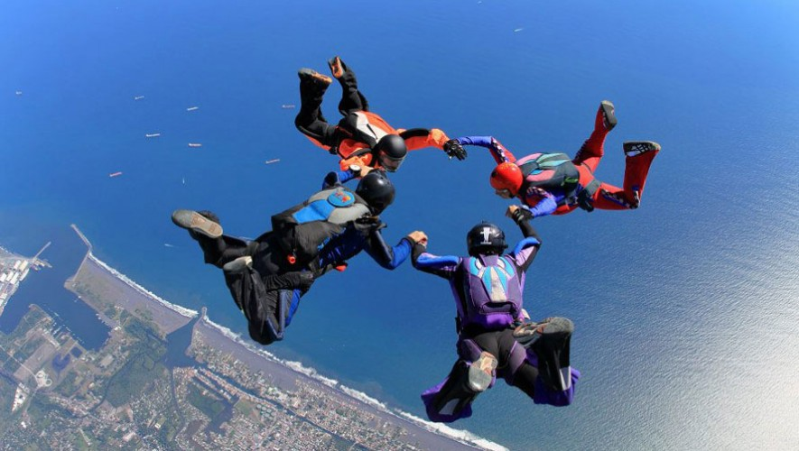
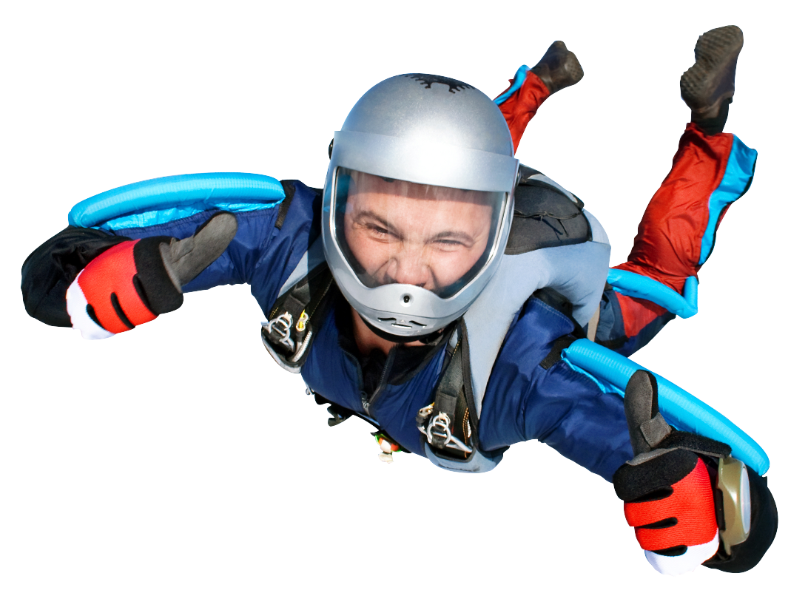
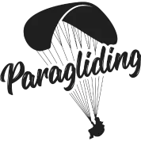
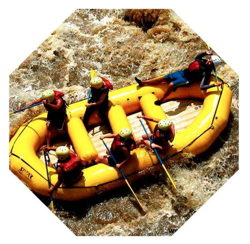
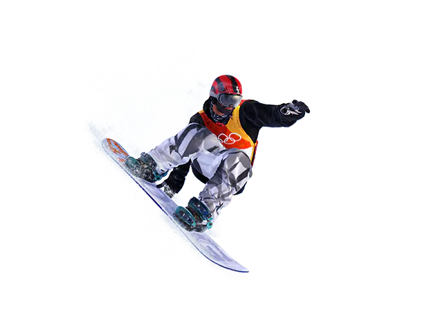

Deportes Extremos
Parkour

LINK A LA PAGINA DE DESCRIPCION
El bcspn es una disciplina física en la capacidad motriz del individuo, desarrollado a partir del método natural.
Paracaidismo
 LINK A LA PAGINA DE DESCRIPCION
El paracaidismo es la técnica de lanzamiento de seres humanos u objetos desde cierta altura usando un paracaídas para amortiguar el impacto del aterrizaje.
Parapente

 LINK A LA PAGINA DE DESCRIPCION
El parapente es un deporte nacido a finales del siglo XX por la inventiva de montañeros que querían bajar volando mediante un paracaídas desde las cimas que habían ascendido..
Rafting

 LINK A LA PAGINA DE DESCRIPCION
El descenso de ríos o balsismo, conocido mundialmente como rafting, es una actividad deportiva y recreativa que consiste en recorrer el río en la dirección de la corriente, por lo general sobre algún tipo de embarcación o balsa..
Snowboarding

 LINK A LA PAGINA DE DESCRIPCION
El snowboard, snowboarding, tabla sobre nieve, tabla de nieve, tabla neval o incluso tablanieve o nevotabla, es un deporte extremo de invierno, en el que se utiliza una tabla para deslizarse sobre una pendiente cubierta por nieve. El equipo básico para practicarlo son la mencionada tabla, las fijaciones y las botas..